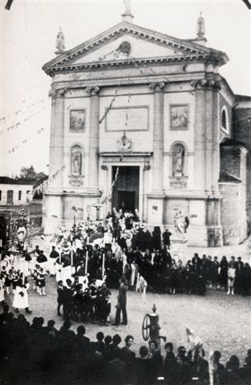

La chiesa storica di San Martino di Lupari, di origine cinquecentesca, venne varie volte rimaneggiata e venne completata intorno al 1740, quando la facciata fu conclusa. Nel corso dei secoli vari balzi demografici della popolazione ne resero necessario l’ampliamento. Originariamente la chiesa si presentava a pianta rettangolare con una serie di cappelle laterali. Fu in parte modificata negli anni ‘40 del novecento per recuperare il materiale edilizio con il quale venne costruita l’attuale chiesetta di Campretto a seguito della costruzione dell’attuale duomo. Delle cappelle demolite non rimane molto, ma fu un espediente che permise di evitare il totale abbattimento dell’edificio poichè non si trovava un terreno per la costruzione del nuovo Duomo. La vecchia chiesa risultava troppo piccola per le esigenze della crescente comunità. Nel 1949 vennero spostati nel nuovo duomo anche gli altari. Quello che rimane, che si può osservare tutt’ora, è un’aula semplice, che si conclude con un’abside a volta, modifica del ‘700 nel tentativo di soddisfare la necessità di ampliamento, e due sacrestie laterali. Le pareti sono intervallate da semicolonne con capitelli con decorazioni vegetali e lesene, che ritmano lo spazio, concluso in alto da ampie finestre inserite in archi a tutto sesto che illuminano gli affreschi del soffitto voltato. Vengono mantenuti alcuni dipinti settecenteschi del Diziani. L’affresco centrale rappresenta la Gloria di San Martino, i due affreschi minori invece, le virtù morali (obbedienza, umiltà e pazienza) e teologali (fede, speranza, carità). La facciata riprende lo stile palladiano con semi colonne che la dividono in tre sezioni verticali. La parte centrale viene visivamente tagliata nel mezzo dal complesso di paraste, nicchie con statue di santi e stemmi vescovili che incorniciano il portone di ingresso.
